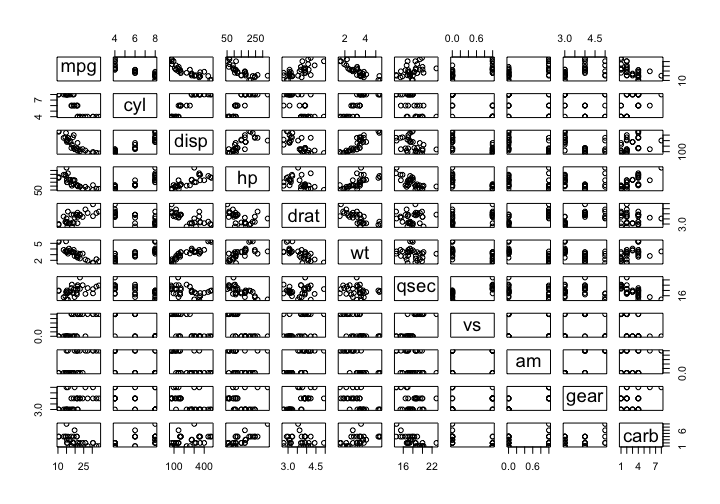

Download this worksheet as a .Rmd
About these worksheets
These worksheets are intended to give you practice doing historical data analysis using the R programming language. You are probably encountering them as an assignment from one of my classes, such as “Data and Visualization in Digital History” and “Programming in History/New Media.” These materials are also a supplement to my book in progress, Digital History Methods in R.
You can also get these worksheets from a GitHub repository. To clone them to your own computer, use this command:
git clone https://github.com/lmullen/worksheets.gitAssumptions
I’m going to assume that you have the most recent version of R installed on your computer. I’m also going to assume that you are using RStudio, though you could use R on the command line without RStudio just fine.
How to use these worksheets
You are looking at an HTML version of these worksheets. They have been generated from a source document using R Markdown. The way that you will use these worksheets is to download the .Rmd file for a worksheet to your own computer, and open it in RStudio. You will then read through the worksheet. You will notice that there are code chunks, like the one on lines 5–7 below:
Sample code block (lines 5–7) in an R Markdown document in RStudio.
You can run those code chunks by choosing “run current chunk” or using a keyboard shortcut. You can also use the “Knit HTML” button to create a document. The result will be to echo the code block and to produce whatever output comes from that code. For example the code block above produces this output.
plot(mtcars)
You will have two kinds of tasks to do in these worksheets. First, you will have to fill in the code chunks as indicated with code that solves the problem I have given you. Second, you may have to write some prose to explain what you are doing. If I’ve asked you to write something, prefix each paragraph with a >, which will give your answer a blockquote styling. For instance, this paragraph
> This is a blockquote.
>
> So is this.produces this output:
This is a blockquote.
So is this.
Both kinds of questions will be marked with the word Exercise on this website. In the R Markdown documents, you will find the exercises prefixed like this:
(@) Calculate the mean of the sample data.Once you are done with the assignment, you should knit the document and turn in the resulting HTML file wherever I have asked you to do so. Don’t forget to fill in your name in the author: "" field at the top of the document.
Getting stuck
If you get stuck, ask for help. And always try to do as much of the worksheet as possible. If code doesn’t work, comment it out, but keep it in the file so that I can see what you were trying to do.